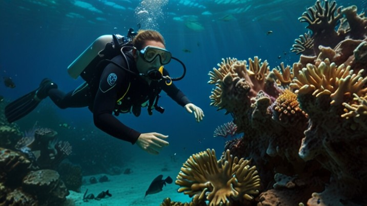
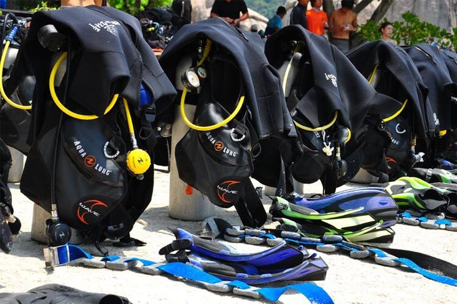

The term scuba is an acronym for Self-Contained Underwater Breathing Apparatus. The equipment that consists of this aparatus include a regulator, regulators and dive tanks. This guide seeks to explain the importance of the different components of this aparatus and other equipment necessary for scuba diving.

The whole point of scuba diving is to explore the world beneath the waves and a scuba diver without a mask is a blind one. A scuba diver also needs a mask so they can navigate the underwater environment.
Fins are are a must when it comes to scuba diving. They allow a diver to with ease. It would be exhausting and ineffective to dive without them.
The regualtor and attached components are the equipment attached directly to the tank. This equipment provides access to the air in the scuba tank which a diver to uses breathe and adjust their buoyancy.
| Component | Function | Types |
|---|---|---|
| First Stage |
Connects directly to the tank and all other components.
Depressurizes air from tank for the other components. All other components are attached to the first stage. |
DIN and Yoke Diaphram and Piston Balanced and Unbalanced |
| Second Stage |
Further reduces pressure from the hose to atmosphere
pressure. Allows the diver to breathe air at a safe pressure. |
Balanced and Unbalanced Environmentally Sealed |
| Octopus (Emergency Second Stage) |
Provides the same function as a second stage. Reserved in case of a second stage failure. |
Balanced and Unbalanced Environmentally Sealed |
| Pressure Gauge | Displays the current tank air pressure in the tank. |
Analog Digital. |
Regulator buying and maintanence guides provide more in depth explanations about regulators.
A BCD (buyancy compensator device) is a vest like device that can be inflated or deflated according to the needs of the diver. This allows the diver to adjust their buyancy at different depths.
A scuba tank is a container of highly pressurized air (about 3000 psi for alluminum tanks and about 2400 psi for steel tanks). It allows a scuba diver to carry their air supply on their back and be mobile.
Dive weights are necessary for a scuba diver to manipulate their buyancy and sink.
A dive computer displays your depth and time spent underwater. It uses the depth, time and altitude of a dive to calculate how much time a diver should spend out of water between dives This device removes possible human error from calculating the neccesary time spent between dives and thus increases diver safety. While not necessary for a diver to have, it is strongly encouraged.
Many dives will not require the use of a snorkel as the actual dive is close to the access point. However, having a snorkel is highly recommended. If a long surface swim is required to get to the dive, it is better to use a snorkel in order to conserve oxygen from the tank for the actual dive.
Defogger is paste that can be put on the inside of a scuba mask that helps prevent a mask fogging up during a dive.
A compass is evtremely helpful for a diver to have as it helps them navigate the underwater environment without the need for consistsent landmarks (landmarks are prone to move in the ocean over time).
A line cutter is good piece o equipment to have and recommended over dive knives. A line cutter can cut fishing line and kelp that a diver can get tangled in while reducing the risk of damaging your own equipment (i.e. hoses and BCD).
PADI (Professional Association of Diving Instructors) is a great resource and provides a more comprehensive guide to scuba equipment. PADI is also a great resource for those wanting to learn how to dive.